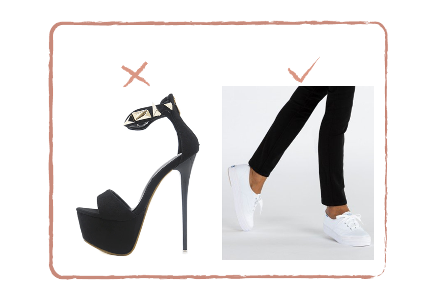

לא מזניחים את הרגליים
מיותר להזכיר שכדאי שלא לחשוף את הבוהן עם הפטרת? יופי, כי מנעליים פתוחות ננסה להימנע ככל האפשר אז שורש, טבע, הוויאנס ואפילו ממלך האופנה הישראלית הקרוקס (אנחנו ציניות כן?) אנחנו נמנע! אז נמשיך בקו הנעליים הסגורות ונדגיש כי רצוי שלא לנעול נעל משופשפת שתשדר מראה מרושל ומוזנח. לנשים שבינינו, אמנם מסדרונות המשרדים קצת דומים למסלול תצוגת האופנה של ויקטוריה סיקרט- אבל זה לא אותו דבר, ולכן נמנע מראש מנעילת עקב גבוה.
עשה ואל תעשה-
נעליים
